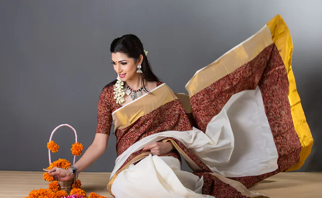

Saree:
The saree is the king of women’s wear in Jharkhand. Draped gracefully around the body, the saree defines femininity, grace, and tradition. Be it the local tribal weaves or the delicate handloom patterns, each saree tells tales of craft and cultural heritage. Colors and motifs of Jharkhandi sarees often reflect the natural beauty of the region; some popular motifs are imitated by flora, fauna, and tribal symbols.